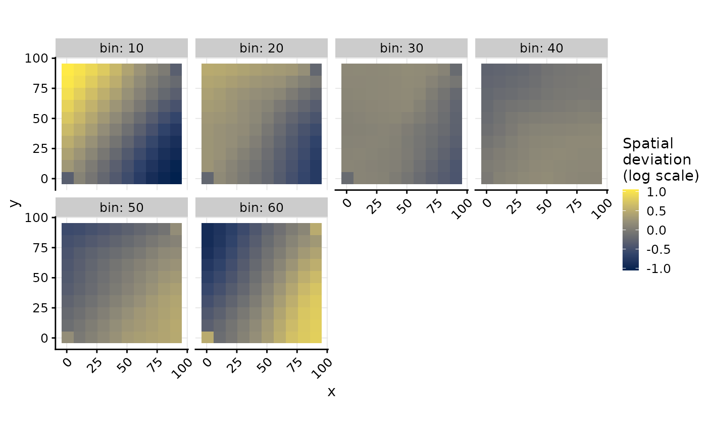

Produces a faceted tile map showing the spatial random field contribution per bin, centred by subtracting each bin mean so the map shows spatial deviation from the average availability of that bin size class.
Usage
spatial_field_plot(
fit,
cvar = NULL,
ref_ffx = NULL,
ref_re = NULL,
lon_step = 5,
lat_step = 5,
ncol = 4L
)Arguments
- fit
A ComPoM object from fit_model() with a spatial mesh.
- cvar
Character. Name of the continuous covariate. If supplied the spline is evaluated at the mean observed value. Default NULL.
- ref_ffx
Named list of reference values for the fixed-effect factor variables (e.g. list(yy = 2015)). Defaults to the first observed value of each fixed-effect variable detected from the model formula.
- ref_re
Character. Reference level of the nuisance RE. Default is the first level.
- lon_step
Numeric. Longitude grid resolution. Default 5.
- lat_step
Numeric. Latitude grid resolution. Default 5.
- ncol
Integer. Number of facet columns. Default 4.
Examples
# \donttest{
dat <- data_prep(ex_comp, c("Year", "Season", "Vessel", "trip", "x", "y"),
"length", "count")
dat$x <- as.numeric(as.character(dat$x))
dat$y <- as.numeric(as.character(dat$y))
mesh <- sdmTMB::make_mesh(dat, c("x", "y"), cutoff = 25)
fit <- fit_model("Year", "Season + Vessel", data = dat, backend = "TMB",
mesh = mesh, time = "Year", coords = c("x", "y"),
iter = 300, warmup = 100, thin = 2)
#> Model formula: tot_by_bin ~ 0 + bin + factor(Year):bin + (1 | bin:Season) + (1 | bin:Vessel)
#> ℹ Fixing or mirroring `ln_tau_Z`
spatial_field_plot(fit, lon_step = 10, lat_step = 10)

# }